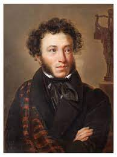

Alexander Pushkin (1799-1837)
Major works
- Prophet (1826), Ode (not about an emperor, but about a poet), use of OCS words to create a lofty style ("glas" instead of "golos"; "zenitsa" instead of "glaza", "usta" instead of "rot")
- Belkin Tales (1831)
- Eugene Onegin (1823-1831)
- Queen of Spades (1834)
- Captain's Daughter (1836)
- Monument (1836), Ode
- Bronze Horseman (1837)
